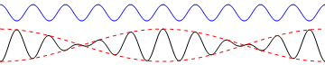

Group velocity¶
A useful trigonometric identity
Superposition of two harmonic waves For two harmonic waves with similar frequencies and wavenumbers:
The first cosine is called the “envelope wave”. It has a small frequency and wavenumber in comparison to the second cosine. It’s velocity, called the group velocity is given by
The second cosine is called the “carrier wave”. It’s velocity called the phase velocity is
In the following illustration, the envelope has a wavelength ten times that of the carrier wave, and a velocity twice that of the carrier wave. The wavetrain propagates to the right with amplitude modulation. The unmodulated carrier wave is shown in blue for comparison.
Since the envelope wave here is travelling faster than the carrier wave, an observer would see waves appearing at the back of the wavetrain and disappearing at the front.
{kind=link}
In the following illustration, the velocity ratios and wavelengths are the same as in the previous example, but the direction of the carrier wave is opposite to the direction of the envelope wave.
{kind=link}
In the following example, the envelope wave travels at half the speed of the carrier wave. An observer would see waves appearing at the front of the wavetrain and disappearing at the back.
{kind=link}
Motion of a wave packet We now repeat the above analysis, but for a packet of waves, each having a different amplitude:
We will assume that the wavepacket is almost monochromatic, meaning closely centred around a single frequency. The amplitude function \(A(k)\) might be a sharply peaked Gaussian, for example. This allows the frequency to be linearised around the central frequency \(\omega_0\):
This allows the wavepacket to be rewritten in linearised form
Again, we see that the result consists of a monochromatic “carrier wave”, that travels with velocity \(c_{p0}\) and an envelope that travels with velocity \(c_{g0}\), where